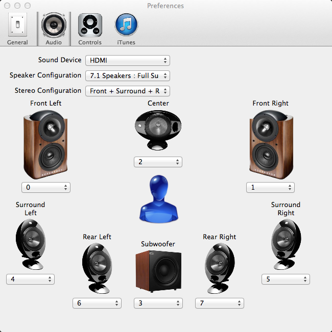

The Audio Preference interface allows you to configure
Audio Preferences is located in the Preferences dialog in the Audio tab.
The Sound Device drop-down lists your available sound cards and external DAC hardware. Select the Sound Device, from the list, you wish Black Omega to use.
Traditionally the playback of music has been confined to two output channels, namely stereo, with a left and right set of speakers. As audio hardware has become more sophisticated and diverse with different arrangements for surround sound output so to has the need to provide support for such configurations. Black Omega specifically caters to meet this requirement.
On start-up, Black Omega queries your hardware in order to find out its different playback capabilities. This includes the number of output channels, or speakers, that it can use for playback and its ability to support Exclusive Integer Mode. The Audio Preference interface allows you to configure what speaker is associated with what output channel.
Use the Speaker Configuration drop-down list to select the number of speaker outputs you have and hence their associated setup. The number of speakers available will also be dependent on the number of output channels supported by your sound device.
Depending on your chosen Speaker Configuration the associated surround sound speaker configuration will be enabled.
Under each of the enabled speakers there is drop-down box with a list of numbers. Each number corresponds to a specific output channel from your sound device. For each speaker, set the output channel number such that it physically corresponds to that speaker.
You can test to see if a particular speaker has been assigned to the right output channel. As you move the mouse pointer over an active speaker icon on the Audio Preference interface a playback button will become visible on top of the speaker. Left click this and an audio sample stating the name of the speaker will be played through the assigned channel.
If you move your mouse over the blue person located in the middle of the speakers a playback button will also appear. Left clicking this will play an appropriate sample through each of the active speakers.
As a speaker's test sample is played you can see which sample is being played by looking at the playback control interface.
As an example, the configuration shown below is for a sound card with a full 7.1 surround-sound setup.
The output channels are mapped to the following speakers
| Output Channel | Speaker |
| 0 | Front Left |
| 1 | Front Right |
| 2 | Surround Left |
| 3 | Surround Right |
| 4 | Rear Left |
| 5 | Rear Right |
| 6 | Center |
| 7 | Subwoofer (LFE) |

Stereo Configuration allows you to select what sets of stereo speakers a standard 2 channel stereo track is played through. Namely it can be played through the Front, Surround and Rear stereo speaker sets.
From the example above, where Stereo Configuration has been set to “Front + Surround + Rear” then